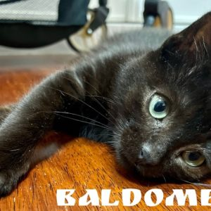
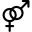
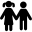
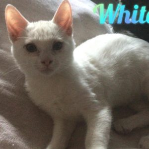

Baldomero

 Sexo: Macho
 Edad: Cachorro
Edad: Cachorro
Fecha de nacimiento: 25/10/2021
 Compatible con:perros, niños y adultos
White Cat

Sexo: Macho
Edad: Cachorro
Fecha de nacimiento: 14/09/2021
Compatible con:perros,gatos, niños y adultos